Protocolo técnico para o projeto e instalação de barreiras permeáveis de bambu para estabilização de ravinas em plintossolos tropicais
Autores: Emersson Guedes da Silva, Diego Vidal dos Santos
Data: 08 de maio de 2026
Resumo
Paliçadas permeáveis representam uma alternativa de baixo custo para controle de ravinas, embora sua aplicação em campo ainda seja descrita, muitas vezes, sem ligação clara entre diagnóstico hidrogeotécnico, cálculo de dimensionamento e execução construtiva. Neste artigo, sistematizamos um protocolo metodológico para projeto e montagem de paliçadas de bambu (Bambusa spp.), calibrado a partir de experiência conduzida em ravinas nos Tabuleiros Costeiros de Sergipe, Brasil. O protocolo combina levantamento morfométrico por aerofotogrametria UAV (GSD ≈ 3 cm), caracterização hidráulica por infiltrômetro de duplo anel, parâmetros geotécnicos obtidos por cisalhamento direto inundado, cálculo do espaçamento, da altura efetiva, do volume retido e da tensão cisalhante de leito, além de critérios de seleção de material, montagem em campo e monitoramento por método dos pinos. Em uma feição com profundidade de 1,10 m, declividade de 12% e velocidade de infiltração básica (VIB) de 1,53 cm/h, o cálculo indicou paliçadas de altura efetiva 0,37 m espaçadas a 3,1 m, com volume unitário de retenção de 0,78 m³ e custo unitário 5–7× inferior ao de check-dams de alvenaria. O protocolo pode apoiar projetos de bioengenharia de solos ao explicitar a ligação entre energia do escoamento, estabilidade do talude, retenção de sedimentos e manutenção pós-instalação.
Keywords Permeable check-dam, soil bioengineering, gully erosion control, bamboo, tropical Plinthosol, design protocol
Introdução
A erosão acelerada do solo é uma das formas mais persistentes de degradação dos recursos terrestres, com perdas globais estimadas em mais de 35,9 Pg ano⁻¹, das quais a erosão hídrica responde pela maior parcela em regiões tropicais e subtropicais (Borrelli et al., 2017; Poesen, 2018). O processo não se distribui de forma uniforme; converge para feições lineares onde o escoamento se concentra e a incisão do leito se acelera (Liu et al., 2021). Quando a energia do fluxo supera a resistência ao cisalhamento do solo, formam-se ravinas cuja progressão pode alcançar taxas de recuo de cabeceira entre 0,5 e 5,0 m ano⁻¹ em solos tropicais com horizonte subsuperficial de baixa permeabilidade (Souza et al., 2025).
A evolução das ravinas alterna estágios de incisão vertical, alargamento por colapso de taludes e estabilização parcial quando o gradiente longitudinal se aproxima do perfil de equilíbrio (Sidorchuk, 2006), sequência na qual a largura tende a aumentar mesmo após a profundidade atingir o limite do horizonte resistente subjacente (Hayas e Gómez, 2024). A modelagem desse alargamento permanece menos desenvolvida que a da incisão, em parte porque as falhas de talude dependem de ciclos de umedecimento e secagem que modificam temporariamente a coesão aparente em solos com contrastes texturais abruptos (Accioly Teixeira de Oliveira, 1991; Hayas e Gómez, 2024).
Nos Tabuleiros Costeiros do Nordeste brasileiro, essa dinâmica ocorre sobre Plintossolos, cuja morfologia inclui horizontes B plínticos de textura argilosa (49–51% de argila) que funcionam como camada de baixa permeabilidade durante eventos de chuva intensa (Moraes et al., 2006; Sidorchuk, 2006). A velocidade de infiltração básica restritiva (≤ 2 cm/h), associada a precipitações sazonais cujo percentil 95 ultrapassa 180 mm/mês, favorece a saturação rápida do horizonte superficial e a geração de escoamento subsuperficial no contato Ap–Bt, mecanismo que sustenta o aprofundamento de ravinas mesmo enquanto a classificação morfológica ainda as mantém abaixo do limiar de voçoroca (Cassol et al., 2023; Oliveira et al., 2024). A diferença de erodibilidade entre horizontes superficiais e subsuperficiais depende da tensão crítica de cisalhamento; em solos com contraste textural e umidade antecedente elevada, a redução da resistência ao destacamento no horizonte superficial pode ampliar o alargamento da ravina no contato Ap–Bt (Lee et al., 2022).
O uso do solo intensifica esse processo, pois pastagens degradadas concentram perda de produtividade e pressão por abertura de novas áreas no Brasil, com compactação superficial do horizonte Ap que reduz a infiltração e amplia o coeficiente de escoamento em eventos de baixa recorrência (Feltran-Barbieri e Féres, 2021). Em vertentes dos Tabuleiros Costeiros sob pastagem com sinais de degradação, a combinação de solo exposto no terço inferior da vertente, trilhas de gado paralelas ao declive, falta de métodos de conservação do solo e concentração do escoamento em sulcos preexistentes cria condições que aceleram a transição de erosão laminar para linear (Moraes et al., 2006).
Em ravinas controladas ao mesmo tempo por hidráulica e geotecnia, barreiras transversais permeáveis podem reduzir a conectividade hidrossedimentológica ainda nos estágios iniciais da intervenção (Frankl et al., 2021). A lógica dessas estruturas remonta às experiências francesas em torrentes alpinas no século XIX, quando sequências de check-dams de alvenaria foram usadas para estabilizar o perfil longitudinal de cursos d’água declivosos, conceito depois adaptado a materiais permeáveis e a bacias menores (Piton et al., 2017). Diferentemente das barragens impermeáveis, as estruturas permeáveis interceptam o escoamento concentrado sem bloquear integralmente a passagem da água, reduzindo a velocidade do fluxo por resistência hidráulica e armazenamento temporário a montante (Castillo et al., 2014; Stokes et al., 2009). A queda da tensão cisalhante sobre o leito favorece a deposição progressiva, com formação de patamares de sedimento que suavizam o gradiente longitudinal da feição e criam locais favoráveis à colonização vegetal (Morgan e Rickson, 2003).
O desempenho dessas estruturas na contenção de sedimentos foi quantificado em diferentes contextos climáticos e pedológicos. Sequências de check-dams permeáveis em bacias mediterrâneas foram associadas a reduções de 60–85% na carga sólida transportada, ao passo que em ambientes semiáridos da Índia intervenções com barreiras transversais combinadas a cobertura vegetal registraram retenção de 12,3 a 18,7 t ha⁻¹ ano⁻¹ de sedimento, valores que representam de 40 a 65% da perda de solo anual estimada para ravinas ativas não tratadas (Lucas-Borja et al., 2021; Meena et al., 2023; Zema et al., 2018). O efeito depende da declividade local, da granulometria do material transportado e da manutenção após eventos extremos, fatores que variam entre bacias e dificultam a transferência direta de parâmetros de dimensionamento de uma região para outra (Tang et al., 2019).
No Brasil, intervenções com bioengenharia de solos e geotêxteis naturais foram documentadas em margens fluviais e feições erosivas do baixo São Francisco, com estabilização parcial quando associadas à revegetação e ao manejo do escoamento concentrado (Antonio et al., 2021; Fontes et al., 2021; Holanda et al., 2021). Essa base aplicada ainda é predominantemente descritiva e raramente relaciona altura efetiva, espaçamento e volume retido a parâmetros hidráulicos e geotécnicos medidos em campo ou laboratório, condição que limita a reprodutibilidade das intervenções e dificulta a comparação de desempenho entre sítios.
A bioengenharia de solos integra materiais vivos e inertes em estruturas cuja função hidráulica e mecânica muda com o tempo (Preti et al., 2022). Em regiões tropicais, o uso de espécies nativas com propagação vegetativa por estacas pode ampliar a vida útil das intervenções além da duração do material inerte, como observado em paliçadas vivas instaladas nas Antilhas Francesas, onde estacas de Gliricidia sepium e Erythrina spp. desenvolveram raízes adventícias que aumentaram a resistência ao cisalhamento do solo adjacente em 30–60% após 24 meses (Mira et al., 2021). No contexto brasileiro, a disponibilidade de bambu (Bambusa spp., Dendrocalamus spp.) em touceiras próximas a áreas de pastagem degradada facilita a execução, pois combina propriedades mecânicas adequadas à função estrutural, com resistência à tração longitudinal entre 120 e 230 MPa em colmos maduros, e possibilidade de brotação a partir de estacas enterradas em contato com solo úmido (Sharma et al., 2015; Trujillo e López, 2016). A durabilidade do material em ambiente tropical, contudo, é limitada pela exposição a fungos e insetos xilófagos, exigindo tratamento para durabilidade e reposição programada para manter a integridade estrutural ao longo do horizonte de projeto (Kaminski et al., 2016).
A literatura técnica ainda oferece poucas rotinas que integrem diagnóstico hidrogeotécnico, dimensionamento analítico e montagem em campo, considerando a base empírica internacional e a disponibilidade local de material. Recomendações genéricas de espaçamento, frequentemente expressas como faixas fixas de 3 a 5 m, não deixam clara a relação entre altura efetiva, declividade do leito e volume de retenção. Essa simplificação favorece falhas por erosão lateral de contorno quando a ancoragem das varas nas paredes é insuficiente, por piping do solo junto à base quando a vedação basal e a compactação a montante não controlam fluxos preferenciais, e amplia o risco de sobrecarga hidrostática quando a altura efetiva ultrapassa um terço da profundidade local da ravina (Le Roux et al., 2020). Em Plintossolos, o contraste de resistência entre o horizonte Bt plíntico e o Ap superficial pode levar à subestimativa da ancoragem lateral e da compactação basal (Cassol et al., 2023). Métodos que convertam leituras pontuais de monitoramento em estimativas contínuas de espessura do depósito ainda são pouco descritos, embora essa etapa seja necessária para estimar o volume efetivamente retido por estrutura e para calibrar o dimensionamento em ciclos sucessivos de manutenção (Galia et al., 2022; Marzolff e Ries, 2007).
O presente artigo propõe um protocolo metodológico de dimensionamento e montagem de paliçadas permeáveis de bambu em Plintossolos tropicais, calibrado a partir de experiência conduzida em ravinas nos Tabuleiros Costeiros de Sergipe, Brasil. O objetivo é avaliar como medidas morfométricas, hidráulicas e geotécnicas podem ser convertidas em critérios de dimensionamento e execução, oferecendo uma rotina reprodutível para intervenções de bioengenharia voltadas à dissipação de energia, à retenção de sedimentos e à estabilização progressiva de ravinas.
Metodologia
Protocolo de dimensionamento
O protocolo deve ser aplicado em oito etapas encadeadas, nas quais cada medição de campo orienta uma decisão de projeto. A rotina começa pelo inventário morfométrico para obter a largura média da ravina (W), a profundidade máxima (D) e a declividade do fundo (Sf), passa pela aferição hidráulica para classificar o regime de escoamento e pela definição dos parâmetros geotécnicos para estimar a margem de estabilidade do talude, e chega ao dimensionamento da altura efetiva da paliçada (H), do espaçamento entre estruturas (E), do volume de sedimento retido por estrutura (Vᵣ) e da tensão cisalhante de leito (τ). A seleção do material, a montagem e o monitoramento devem transferir esses limites para campo e verificar se a retenção de sedimentos acompanha o volume útil calculado (Tabela 1).
Tabela 1. Rotina operacional do protocolo proposto
| Etapa | Produto | Insumo | Critério de saída |
|---|---|---|---|
| 1 | Inventário morfométrico | Voo UAV (GSD ≤ 5 cm) | W, D, Sf por seção |
| 2 | Diagnóstico hidráulico | Infiltrômetro duplo anel | VIB por posição (cm/h) |
| 3 | Parâmetros geotécnicos | Cisalhamento direto inundado | c, φ, γₛₐₜ, Hc |
| 4 | Dimensionamento | Equações 1–5 | H, E, Vᵣ, τ |
| 5 | Seleção de material | Disponibilidade local | Bambu, madeira ou pedra |
| 6 | Construção | Equipe de 2–4 pessoas | Montagem com ancoragem lateral |
| 7 | Monitoramento | Método dos pinos | Taxa de assoreamento (cm/mês) |
| 8 | Programação de manutenção | Tratamento para durabilidade + curva FEM de fator de segurança | Janela de reposição modular (anos) |
Inventário morfométrico
A largura média W e a profundidade máxima D foram extraídas das seções transversais do MDE, enquanto a declividade do fundo Sf foi estimada por regressão linear do perfil longitudinal. A ravina foi separada em segmentos hidraulicamente homogêneos, adotando-se como referência variação de Sf inferior a 30% entre seções consecutivas (Castillo et al., 2014). Esse critério reduziu o erro acumulado no espaçamento E, pois a distância entre estruturas varia diretamente com a declividade local do leito. Nas feições com mais de 20 m de extensão, a divisão em segmentos inferiores a 10 m evitou que um único valor de E fosse aplicado a trechos com energia de escoamento muito diferente, situação que favorece a formação de zonas de erosão remontante entre paliçadas excessivamente espaçadas.
Diagnóstico hidráulico
No caso das paliçadas instaladas nas ravinas avaliadas, a velocidade de infiltração básica (VIB) foi usada para classificar a feição em regime infiltração-dominante (VIB > 6 cm/h) ou escoamento-dominante (VIB < 2 cm/h). Sob VIB < 2 cm/h, o destacamento por tensão cisalhante de leito tendeu a prevalecer, justificando a paliçada como barreira permeável de dissipação de energia (Lafayette et al., 2011; Lee et al., 2022). Valores intermediários (2–6 cm/h) foram interpretados como indicativos de maior dependência de práticas complementares a montante, como cobertura vegetal ou hidrossemeadura, para reduzir a geração de enxurrada antes que o fluxo alcançasse o eixo da ravina, comportamento consistente com ensaios de campo nos quais a cobertura morta reduziu simultaneamente escoamento superficial e perda de solo, enquanto a revegetação de encostas abandonadas diminuiu a resposta erosiva a eventos de chuva intensa (Prats et al., 2012; Yue et al., 2020).
A medição abrangeu três posições da vertente para capturar a heterogeneidade vertical da condutividade hidráulica, pois VIB elevada no terço superior, associada a horizonte A mais espesso, poderia subestimar o escoamento gerado no terço inferior, onde o contato com o Bt plíntico reduz a infiltração e favorece a saturação rápida durante eventos intensos (Moraes et al., 2006; Wang et al., 1999). A aferição estratificada parametrizou o dimensionamento, pois a condutividade hidráulica saturada condiciona a fração do escoamento que alcança a paliçada (De Roo e Riezebos, 1992; Wang et al., 1999).
Parâmetros geotécnicos e altura crítica
A coesão c e o ângulo de atrito interno φ obtidos no ensaio de cisalhamento direto inundado parametrizaram a altura crítica de corte vertical Hc pela teoria de Rankine, assumindo fissura de tração preenchida por água. A Equação 1 foi usada para estimar Hc na condição de saturação plena com coluna d’água na fissura.
| Hc = dfrac4 cγₛₐₜ · tan!(45° + (φ)/(2)) - dfrac2 c √(Kₐ)γₛₐₜ | (1) |
O coeficiente Kₐ na Equação 1 é o empuxo ativo de Rankine, definido por Kₐ = tan²(45° - φ/2). A redução da coesão aparente por perda de sucção, que ocorre quando a frente de umedecimento atinge o horizonte Bt após eventos superiores a 50 mm/dia, é incorporada ao adotar a envoltória de resistência na condição inundada. Para o horizonte Bt do Plintossolo estudado, com c = 13,02 kPa, φ = 34,93° e γₛₐₜ = 19,93 kN/m³, a altura crítica calculada foi Hc = 3,35 m. Ravinas com profundidade superior a 0,40 · Hc indicam degradação progressiva e recomendam a instalação da paliçada no trecho imediatamente a montante da cabeça erosiva, antes que ciclos de umedecimento e secagem reduzam a margem de estabilidade do talude (Firoozi e Firoozi, 2024; Vanmaercke et al., 2021). O limiar D/Hc > 0,40 é conservador para Plintossolos pois o horizonte Bt plíntico, quando exposto a ciclos de umedecimento e secagem, desenvolve fendilhamento que acelera a infiltração preferencial e reduz a coesão efetiva além do valor de ensaio.
Dimensionamento hidráulico e geométrico
A altura efetiva H deve corresponder à porção da paliçada acima do fundo da ravina e controla simultaneamente a capacidade de retenção e a pressão hidrostática sobre a estrutura. Para evitar represamento excessivo, com potencial de induzir erosão lateral de contorno e sobrecarga sobre as estacas, adota-se H limitado a um terço da profundidade local D, conforme a Equação 2.
| Hₘₐₓ = (D)/(3) | (2) |
A justificativa física do limite H ≤ D/3 decorre da observação de que alturas efetivas superiores a esse limiar, em solos com condutividade hidráulica inferior a 2 cm/h, geram gradiente hidráulico suficiente para iniciar piping junto à base da estrutura quando o nível de sedimento a montante se aproxima da crista (Le Roux et al., 2020). Em Plintossolos, onde a transição textural abrupta entre os horizontes Ap e Bt favorece o acúmulo de água no contato, esse limite é importante para reduzir sobrecarga na barreira (Corrêa et al., 2023).
O espaçamento E entre paliçadas consecutivas deve posicionar a crista da estrutura a jusante no nível da base da estrutura a montante, formando patamares quando o assoreamento se completa (Equação 3). Esse critério geométrico assegura que o volume de sedimento retido pela primeira estrutura não ultrapasse a capacidade da segunda, mantendo a continuidade hidráulica do sistema.
| E = (H)/(Sf) | (3) |
O volume de sedimento retido por estrutura individual deve ser estimado pela geometria do prisma triangular formado a montante da paliçada (Equação 4). A premissa de prisma triangular com altura igual a H e base igual a E é válida enquanto a deposição permanece subcrítica, isto é, enquanto o sedimento não atinge a crista da estrutura a montante.
| Vᵣ = (E · W · H)/(2) | (4) |
A tensão cisalhante de leito τ, sob regime permanente uniforme, deve ser usada para verificar se o espaçamento calculado pelas Equações 2–3 precisa ser reduzido em trechos de maior energia (Equação 5).
| τ = γ · Rₕ · Sf | (5) |
O peso específico da água é γ = 9,81 kN/m³, Rₕ é o raio hidráulico (m), aproximado pela razão entre a área molhada e o perímetro molhado da seção, e Sf é a declividade do leito (m/m). A aproximação Rₕ ≈ 0,10 m para lâminas da ordem de 0,10 m em ravinas com largura inferior a 2,0 m é razoável quando a razão largura/profundidade excede 5, condição típica de ravinas em Plintossolos dos Tabuleiros Costeiros.
Valores de τ > 6 Pa associados ao horizonte Ap (33% de argila) em Plintossolos indicam que a tensão de cisalhamento excede a resistência ao destacamento das partículas do leito, sugerindo necessidade de paliçada adicional ou redução de E em 20–30% no segmento crítico (Le Roux et al., 2020; Morgan e Rickson, 2003). O limiar de 6 Pa deriva de ensaios de erodibilidade em canal que indicam início de transporte de agregados de argila para tensões nessa ordem de grandeza, valor inferior aos 10–15 Pa típicos de solos arenosos, refletindo a menor coesão interagregados do horizonte Ap em relação ao Bt subjacente (Blanco e Lal, 2023).
Como a Equação 5 representa a condição média de projeto sob regime permanente uniforme, bacias de resposta rápida, com tempo de concentração inferior a 30 min, podem exigir fator de segurança adicional de 1,3 sobre o espaçamento calculado ou redução de E para 80% do valor nominal quando a área de contribuição a montante exceder 2 ha, acomodando picos de τ que podem ser até 40% superiores durante a passagem da frente de onda.
Seleção e preparo prévio do material
A seleção do material deve preceder em pelo menos 30–60 dias a montagem em campo, intervalo necessário para corte, secagem parcial e, quando aplicável, indução de brotação dos colmos. Em regiões tropicais, bambu, madeira roliça e pedra seca atendem a condições distintas de energia do escoamento e acessibilidade do terreno (Tabela 2).
Tabela 2. Comparação técnico-econômica dos materiais para paliçadas
| Material | Resistência (MPa) | Vida útil sem trat. | Custo (R$/m²) | Indicação |
|---|---|---|---|---|
| Bambu (Bambusa, Dendrocalamus) | 100–400 (tração) | 6–12 meses | 35–70 | Ravinas pequenas e médias |
| Madeira roliça (eucalipto, leucena) | 40–90 (compressão) | 3–8 anos | 80–150 | Ravinas médias e grandes |
| Pedra seca | n.a. (empilhamento) | > 50 anos | 50–120 | Encostas serranas, leitos pedregosos |
A escolha do bambu como elemento estrutural da paliçada apoia-se em uma base bioquímica e microestrutural que justifica o desempenho mecânico observado em campo. Os colmos maduros de Bambusa vulgaris apresentam parede composta predominantemente por celulose (40–50% em massa), hemicelulose (20–30%) e lignina (20–25%) (Bhat, 2003; Liese, 1998). A matriz lignificada confere rigidez à compressão e ao cisalhamento (Bhat, 2003; Janssen, 1995), enquanto as cadeias de celulose cristalina, organizadas em microfibrilas com ângulo de inclinação reduzido em relação ao eixo do colmo, sustentam a elevada resistência longitudinal à tração (Janssen, 1995; Liese, 1998). A lignificação progressiva entre o terceiro e o quinto ano de idade explica o ganho de até 30% na resistência à flexão em colmos maduros, condição que motivou o critério etário adotado na triagem em campo (Bantie et al., 2025; Bhat, 2003).
Em escala mesoscópica, os feixes vasculares concentram-se preferencialmente no terço externo da parede e rarefazem-se em direção ao lume, configurando um compósito naturalmente graduado cuja distribuição radial de fibras de esclerênquima maximiza a resistência à flexão para uma dada massa de material, padrão descrito como functionally graded material na literatura de ciência de materiais aplicada a bambus tropicais (Ghavami e Marinho, 2005; Iwasaki et al., 2022). Esse arranjo explica por que colmos de Bambusa atingem razão resistência-massa comparável à de aços estruturais comuns sob carga axial, característica que sustenta a viabilidade técnica do material em obras de bioengenharia de baixo aporte energético (Ghavami e Marinho, 2005; Janssen, 1995).
As propriedades mecânicas de Bambusa vulgaris relevantes para o projeto da paliçada compreendem resistência longitudinal à tração de 120–230 MPa em colmos maduros e comportamento ortotrópico marcado, com módulo de elasticidade longitudinal cerca de uma ordem de grandeza superior aos módulos transversal e de cisalhamento, padrão consistente com a orientação preferencial dos feixes vasculares paralela ao eixo do colmo (Budhe et al., 2019; Ghavami e Marinho, 2005; Iwasaki et al., 2022). Sob carga hidrodinâmica, a anisotropia faz com que tensões de cisalhamento paralelas às fibras reduzam a margem de segurança em níveis muito inferiores aos das tensões longitudinais de tração, condição confirmada em ensaios de flexão de quatro pontos com Phyllostachys edulis (He et al., 2024). Para a paliçada, esse comportamento implica que a verificação dimensional do diâmetro das estacas verticais deve considerar a tensão cisalhante interlaminar das junções, e não apenas a resistência à flexão dos colmos horizontais.
Na seleção das estacas, segmentos com nó devem ficar fora das regiões de amarração e de contato direto com as varas horizontais. Esse critério deriva de ensaios em bambu que registraram redução de 20–50% da resistência à tração e ao cisalhamento em seções com diafragma, quando comparadas aos entrenós, em razão da reorganização dos feixes vasculares e da descontinuidade do parênquima (Meng et al., 2023; Shao et al., 2010). No protocolo executivo, as junções colmo-estaca são posicionadas preferencialmente em trechos sem nó, e a coincidência inevitável entre nó e ponto de apoio exige amarração com arame galvanizado para transferir parte do esforço para segmentos adjacentes.
Essa suscetibilidade à degradação justifica que a durabilidade seja tratada como critério de projeto, mas o detalhamento do tratamento e da reposição modular é apresentado em seção específica. No bambu, a perda de resistência decorre do ataque fúngico e da hidrólise da matriz lignocelulósica (Brito et al., 2020), além da atividade de insetos xilófagos, incluindo Coptotermes e gêneros correlatos em colmos de Bambusa e Dendrocalamus (Kadir e Abd. Hamid, 2024). Esses agentes exploram planos interlamelares, diafragmas e parênquima rico em amido, conforme a anatomia dos colmos (Liese, 1998).
Entre os materiais comparados, o bambu (Bambusa vulgaris) reúne disponibilidade em touceiras próximas às áreas de pastagem degradada, facilidade de corte com ferramentas manuais e possibilidade de propagação vegetativa por estacas, atributos compatíveis com obras de bioengenharia de baixo custo e baixa mecanização (Acharya, 2018; Holanda et al., 2021; Janssen, 1995). O preparo prévio dos colmos inclui quatro etapas sucessivas (Figura 1), cuja execução afeta a integridade estrutural e o potencial de brotação do material instalado em campo.

Como primeira etapa de controle de qualidade do projeto, a seleção dos colmos deve ser feita diretamente no bambuzal de origem, priorizando indivíduos maduros de 3–5 anos, identificáveis pela coloração amarelo-acinzentada da epiderme, pela ausência de bainhas foliares aderidas aos nós inferiores e pela presença de líquens nos entrenós, indicadores usados para reconhecer lignificação avançada e maior resistência à flexão dos colmos maduros (Bantie et al., 2025; Bhat, 2003) (Fig. 1a). Colmos com menos de 3 anos devem ser evitados por apresentarem teor de lignina inferior e maior suscetibilidade ao ataque de insetos xilófagos e à degradação fúngica em ambiente úmido, ao passo que colmos com mais de 6 anos devem ser usados apenas após inspeção de fissuras longitudinais que possam comprometer a resistência à flexão sob carga hidrodinâmica.
Uma vez aprovados na triagem visual, cada colmo deve ser inspecionado por preenchimento dos entrenós com água, procedimento simples e de baixo custo que mostra fissuras transversais nos septos internodais e perdas de estanqueidade não detectáveis por inspeção externa (Fig. 1b). Colmos que retêm a coluna d’água por mais de 30 min sem vazamento aparente devem ser classificados como aptos para emprego como estacas verticais, função estrutural que demanda integridade dos septos para distribuição uniforme do empuxo do sedimento retido.
Aqueles com vazamento, por sua vez, devem ser realocados como varas horizontais não estruturais ou descartados, conforme o número de septos comprometidos. Essa triagem deve anteceder o tratamento para durabilidade opcional por imersão em solução de sulfato de cobre (5%) ou por oclusão com bórax e ácido bórico (1:1, em água), procedimento de baixo custo cuja eficácia em Bambusa vulgaris é documentada por ensaios de absorção e retenção de sais em colmos verdes (Khatun et al., 2025), estendendo a vida útil de 6–12 meses para 2–5 anos (Stokes et al., 2009).
Concluída a inspeção de estanqueidade, os colmos maduros com diâmetro de 6–10 cm devem ser reservados para estacas verticais, que recebem a carga concentrada do empuxo do sedimento e da componente horizontal da força de arraste hidrodinâmica, enquanto colmos de 3–5 cm de diâmetro devem ser separados para as varas horizontais entrelaçadas, cuja função é distribuir a pressão do sedimento sobre o vão entre estacas e gerar a permeabilidade controlada da barreira (Jafari et al., 2022). A separação dimensional deve ser realizada ainda no bambuzal para evitar transporte de material inadequado para o canteiro de obras e padronizar o estoque de campo.
A operação de campo materializa a transição entre a touceira de origem e o canteiro de instalação, com o corte dos colmos próximo à base, a seccionamento das estacas no comprimento útil e a aferição métrica que vincula o estoque produzido às dimensões da feição-tipo (Figura 2). O corte é executado com facão ou serrote, rente ao colmo de maior diâmetro disponível na touceira, preservando-se a touceira matriz para evitar comprometer a regeneração vegetativa após a colheita (Fig. 2a). Os colmos abatidos são imediatamente seccionados em estacas de comprimento padronizado, definido como a soma da altura efetiva H calculada por dimensionamento (0,37 m para a feição-tipo F1) e da profundidade enterrada total de 60–80 cm (paliçada inerte) ou 70–100 cm (paliçada viva), totalizando estacas de 1,0–1,4 m que são separadas em pilhas distintas conforme o diâmetro (Fig. 2b). A aferição métrica em campo (Fig. 2c) confirma o comprimento útil da ravina, balizando o número de paliçadas a instalar segundo o espaçamento E calculado pela Equação 3, e verifica a altura H das estacas produzidas em relação ao valor de projeto, garantindo coerência entre o dimensionamento hidráulico e o material efetivamente disponibilizado para o canteiro.
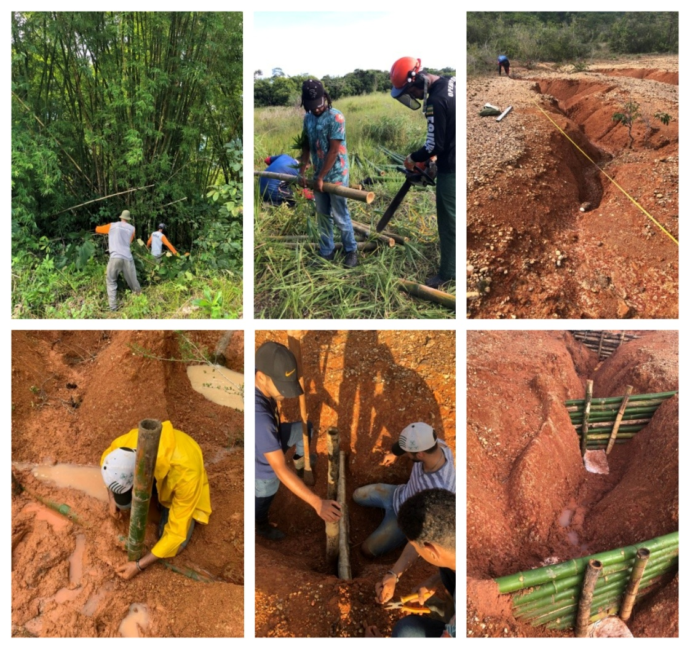
Propagação assistida e paliçada viva
O enterrio parcial dos colmos permite uma forma de bioengenharia ativa ainda pouco explorada na literatura aplicada. Estacas verticais cravadas em solo úmido, sob clima tropical, podem brotar a partir de gemas axilares preservadas próximas aos nós basais (Ray e Ali, 2017), originando rebentos que estabelecem sistema radicular adventício, mecanismo de propagação vegetativa documentado para Bambusa vulgaris sob diferentes regimes de umidade e luminosidade (Hirimburegama e Gamage, 1995; Hossain et al., 2005). Esse mecanismo transforma a paliçada de uma estrutura apenas inerte em uma intervenção parcialmente viva, com função mecânica nos primeiros ciclos chuvosos e função biológica crescente à medida que o reforço radicular contribui para a coesão do solo a montante e para a estabilização das paredes da ravina.
Para induzir a brotação, recomenda-se o uso de segmentos basais dos colmos, contendo pelo menos dois nós com gemas viáveis, posição do colmo associada às maiores taxas de brotação em ensaios controlados com bambu lenhoso (Kalanzi e Mwanja, 2023), e o enterrio prévio em viveiro ou em valeta sombreada por 30–45 dias antes da instalação definitiva (Fig. 1c). Esse enterrio prévio cumpre dupla função, hidratando o tecido lenhoso e estimulando o início da rizogênese antes da exposição às condições mais severas de campo.
Em campo, a brotação nos colmos instalados indica a viabilidade da propagação assistida, observada pela emissão de novos rebentos e folhas a partir dos nós próximos à superfície do solo (Fig. 1d). Esse comportamento pode ampliar a vida útil funcional da paliçada para além da resistência mecânica do bambu não tratado, pois enquanto a estrutura física se degrada em 2–5 anos (Gantait et al., 2018), o sistema vivo derivado da brotação tende a permanecer e a integrar-se à sucessão vegetal espontânea sobre os patamares de sedimento (Bischetti et al., 2021).
A taxa de brotação em colmos basais com gemas viáveis e enterrio prévio supera a observada em colmos sem preparo, mas exige seleção criteriosa do segmento do colmo (Ray e Ali, 2017), manejo do bambuzal de origem para evitar corte de toda a touceira (Bhattacharya e Bhattacharya, 2025) e proteção contra pisoteio animal nos primeiros 90 dias após a instalação (Torres-Manso et al., 2017).
Quando se opta pela paliçada viva, alguns cuidados adicionais devem ser incorporados ao protocolo executivo. A escavação da vala basal precisa preservar o solo de fundação úmido, evitando exposição prolongada ao sol entre escavação e cravamento, enquanto a profundidade de enterrio das estacas deve ser ampliada para 40–50 cm em comparação aos 30 cm usuais para paliçadas inertes, de modo a posicionar os nós basais com gemas viáveis abaixo da zona de dessecamento sazonal (Manohar et al., 2024). A estação preferencial de instalação deve coincidir com o início do período chuvoso regional, condição que assegura umidade contínua durante a fase crítica de rizogênese (Thomas T et al., 2024).
Tratamento para durabilidade e programação de manutenção
A necessidade de tratamento decorre da perda de capacidade mecânica de elementos lenhosos em contato com solo úmido, documentada em estruturas de bioengenharia (Akita et al., 2014; Romano et al., 2016). Em ambiente tropical sem proteção, a perda de propriedades do bambu pode seguir trajetória exponencial P(t) = P₀ · e⁻k t, com taxa k entre 0,03 e 0,10 ano⁻¹ (Correal et al., 2025; Romano et al., 2016). Essa faixa corresponde a perdas acumuladas de até 50% da resistência mecânica em cinco anos, coerentes com decomposição e intemperismo documentados em bambu e madeira expostos à umidade (Akita et al., 2014; Correal et al., 2025; Shanmughavel, 2004). Perdas progressivas semelhantes foram observadas em geotêxteis de fibras naturais sob exposição tropical (Holanda et al., 2024), nos quais a degradação microbiológica e a foto-oxidação reduzem a resistência à tração conforme o tempo de exposição e a composição da fibra (Santos et al., 2025).
O tratamento para durabilidade dos colmos antecede a instalação e foi padronizado por imersão em solução aquosa de boro (CCB, mistura de borato de sódio e ácido bórico a 4–6% em massa) por sete a quatorze dias, complementada por defumação branda e secagem ao abrigo do solo nu, sequência cuja eficácia contra fungos xilófagos e cupins subterrâneos em colmos de Bambusa e Guadua spp. é documentada em construção tropical (Bamboo and Sustainable Construction, 2023; Kaminski et al., 2016). A imersão usa tambores plásticos de 200 L com colmos parcialmente perfurados nos septos internodais, condição necessária para que a solução penetre o lume e atinja o parênquima, ao passo que a secagem subsequente sobre estrado ventilado evita reabsorção de umidade e fixa os sais nas paredes celulares antes do contato com o solo úmido da vala basal.
A programação da reposição modular foi ancorada na trajetória 1/FIₘₐₓ obtida por simulação tridimensional de elementos finitos sob cenário hidrológico P95 e taxa pessimista de biodegradação (k = 0,10 ano⁻¹), apresentada na Figura 12 (Cassol et al., 2023). A janela operacional corresponde ao intervalo entre a instalação e o instante em que o segmento mais demandado entra na fase de aceleração quadrática da perda de capacidade, e a substituição das estacas verticais, críticas pela concentração de momento fletor nas junções, é programada antes desse limiar. A inspeção visual em campo e o método dos pinos confirmam se a degradação real acompanha a curva teórica.
Monitoramento pós-instalação
O monitoramento pós-instalação foi estruturado pelo método dos pinos, com três a cinco hastes graduadas de PVC de 1,0 m instaladas a montante de cada paliçada, distribuídas no eixo do talvegue e junto às margens para registrar a heterogeneidade transversal da deposição (Cassol et al., 2023). A leitura em pontos fixos converteu o assoreamento em indicador de desempenho da estrutura, pois a diferença entre medições sucessivas estimou a espessura de sedimento acumulado e indicou deslocamento lateral do fluxo quando as hastes marginais registraram deposição inferior à observada no eixo da ravina.
As leituras foram organizadas em série temporal mensal no semestre inicial e trimestral após a estabilização visual do patamar, produzindo taxa de assoreamento em cm/mês. A frequência maior no início acompanhou a fase de acomodação da estrutura, quando o solo mobilizado pela escavação e o sedimento transportado pelos primeiros eventos de chuva ainda preenchiam de modo subcrítico o volume útil Vᵣ. Esse comportamento também foi observado por Ramos-Diez et al. (2017) em check-dams nas badlands de Saldaña, onde o desempenho da estrutura foi quantificado pela geometria do sedimento acumulado a montante. Após eventos diários superiores a 50 mm, a inspeção de campo foi direcionada à ancoragem lateral, à vedação basal e à presença de fluxo de contorno, pois esse limiar é compatível com saturação rápida do horizonte Ap em Plintossolos com VIB restritiva (Cassol et al., 2023; Oliveira et al., 2024).
Para converter as leituras pontuais em superfície contínua de espessura, adotou-se interpolação geoestatística por krigagem ordinária com variograma esférico ajustado às leituras dos pinos sobre uma malha regular de 4 m de extensão transversal por 6 m no sentido longitudinal a montante de cada paliçada, procedimento que produziu mapa de espessura cuja integração espacial estimou o volume retido por estrutura e identificou deslocamento lateral do depósito entre campanhas sucessivas (Piton e Recking, 2016; Zema et al., 2018).
Caracterização do sítio experimental e métodos de aquisição
Área-piloto
As ravinas usadas para testar o protocolo situam-se no povoado Timbó, em São Cristóvão, Sergipe, nas coordenadas −10,927923° e −37,195820°. O sítio pertence aos Tabuleiros Costeiros do Grupo Barreiras, unidade que ocupa cerca de 32% da superfície estadual, e combina clima úmido sazonal, precipitação média anual de 1.400 mm e máximo mensal histórico em maio de 164,7 mm (Azambuja et al., 2024; Nascimento e Pedrotti, 2004). As estruturas foram dimensionadas para Plintossolo Háplico Distrófico em vertentes com declividade de 7–24%, faixa em que a baixa permeabilidade subsuperficial e o escoamento concentrado tornam a implantação sequencial das paliçadas dependente da posição relativa de cada feição (Melo et al., 2015). A distribuição espacial das ravinas-piloto (Figura 3) orientou a logística de transporte dos colmos, a ordem de instalação das estruturas e a leitura comparativa dos segmentos monitorados.
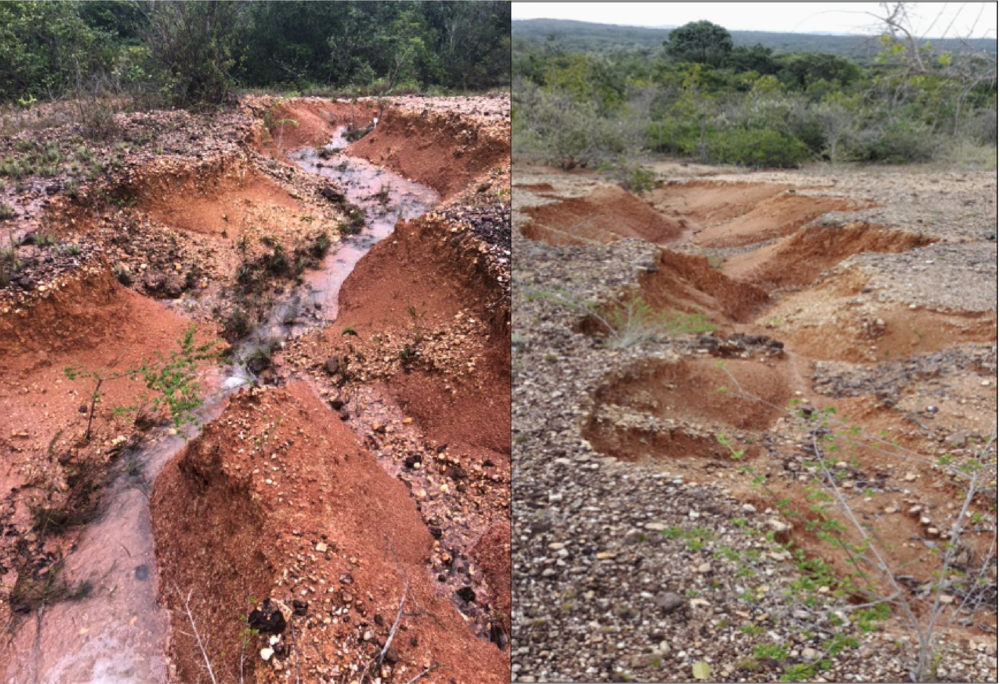
O inventário compreendeu seis feições erosivas ativas (F1 a F6), com profundidades entre 0,40 e 1,50 m, larguras médias entre 1,30 e 2,37 m e comprimentos entre 8,0 e 35,0 m. As seções transversais variaram de formato em V, nas feições mais rasas, a formato em U, nas feições mais evoluídas, com cabeceiras escarpadas associadas a profundidades superiores a 1,0 m. A feição F1 (35,0 m de extensão, 1,10 m de profundidade máxima e 1,37 m de largura média) foi selecionada como feição-tipo para a aplicação do protocolo, por representar a condição modal de ravina ativa em Plintossolo sob pastagem degradada.
Caracterização hidráulica
A capacidade de infiltração usada no dimensionamento foi obtida com infiltrômetro de duplo anel, conforme Bernardo et al. (2008). O anel interno de 20 cm e o externo de 40 cm foram cravados 5 cm no solo, e cada feição recebeu nove ensaios distribuídos entre terço superior, médio e inferior da vertente, com três repetições por posição. As séries tiveram duração mínima de 120 min, com registros a cada 5 min até 30 min e, depois, a cada 10 min até que três leituras sucessivas variassem menos de 10%.
A VIB operacional de cada posição correspondeu à média das cinco últimas leituras da série. Esse desenho amostral vinculou a parametrização hidráulica da paliçada ao gradiente vertical da vertente, pois o terço superior tendeu a apresentar maior infiltração sob horizonte A mais espesso, enquanto o terço inferior, próximo ao exutório da ravina, aproximou-se da condutividade hidráulica do horizonte Bt plíntico, que controla a geração de escoamento subsuperficial e a susceptibilidade à erosão por piping.
Caracterização geotécnica
Para parametrizar a estabilidade do corte vertical, quatro corpos de prova de 50 × 50 × 20 mm foram preparados a partir de um bloco indeformado coletado no horizonte Bt, a 1,20 m de profundidade junto à face da ravina. O carregamento normal foi aplicado em 20, 40, 80 e 200 kPa, com deslocamento controlado a 0,5 mm/min, em ensaio de cisalhamento direto conduzido sob condição rápida, sem adensamento prévio e com inundação, conforme ASTM D 6528-17.
A condição inundada representou o cenário de projeto pós-chuva intensa, no qual a frente de umedecimento alcança o horizonte Bt, a sucção matricial se anula e a resistência ao cisalhamento tende ao valor mínimo efetivo (Caputo e Caputo, 2015; Fredlund e Rahardjo, 1993). A massa específica dos grãos, determinada pelo método DNER-ME 93-94, foi de 2,654 g/cm³. A envoltória de Mohr-Coulomb ajustada aos quatro pontos do ensaio resultou em coesão efetiva de 13,02 kPa e ângulo de atrito interno de 34,93°, e o peso específico saturado, calculado a partir do índice de vazios final médio de 0,60, foi de 19,93 kN/m³. Esses parâmetros foram empregados na verificação de altura crítica de corte vertical.
Levantamento morfométrico por UAV
Os atributos geométricos da ravina, representados pela largura W, profundidade D e declividade do fundo Sf, foram extraídos de Modelo Digital de Elevação (MDE) gerado por aerofotogrametria com UAV DJI Phantom 4 PRO, a 40 m de altura, com sobreposição longitudinal de 80% e lateral de 60%. O processamento no Agisoft Metashape Professional 1.6 produziu ortomosaicos com Ground Sampling Distance (GSD) de 3 cm/pixel e densidade de nuvem de pontos de 120 pontos/m² (Raj et al., 2022; Wilkinson et al., 2024). As seções transversais foram extraídas a cada 1,0 m ao longo do eixo da ravina, enquanto a declividade do fundo foi calculada por regressão linear sobre o perfil longitudinal. A resolução de 3 cm/pixel foi compatível com a detecção de feições erosivas com largura superior a 0,30 m, permitindo individualizar segmentos hidraulicamente homogêneos e identificar pontos de estrangulamento onde a largura da ravina se reduz e a energia do escoamento se concentra (Thwaites et al., 2022).
Resultados e discussão
Dimensionamento para a feição-tipo
A feição-tipo F1 do inventário-piloto apresenta profundidade máxima D = 1,10 m, largura média W = 1,37 m, declividade do fundo Sf = 0,12 m/m e VIB de 1,53 cm/h no terço intermediário da vertente. Esses valores representam uma ravina ativa em regime escoamento-dominante, para a qual a retenção por paliçadas destina-se a reduzir a tensão cisalhante do fluxo e induzir deposição progressiva. Os parâmetros calculados pelas Equações 1–5 são reunidos no quadro de dimensionamento (Tabela 3).
Tabela 3. Dimensionamento prescrito pelo protocolo para a feição-tipo F1
| Parâmetro | Equação | Valor | Observação |
|---|---|---|---|
| Altura crítica de corte Hc | (1) | 3,35 m | Margem D/Hc = 0,33, aceitável |
| Altura efetiva máxima Hₘₐₓ | (2) | 0,37 m | Adotada como H = 0,37 m |
| Espaçamento E | (3) | 3,06 m | Arredondado para 3,0 m em campo |
| Volume retido Vᵣ | (4) | 0,78 m³ | Por estrutura individual |
| Tensão cisalhante τ (lâmina 0,10 m) | (5) | 11,8 Pa | Acima de 6 Pa, segmento crítico |
Nota: D = 1,10 m, W = 1,37 m, Sf = 0,12 m/m, VIB = 1,53 cm/h
O valor de τ (11,8 Pa, considerando lâmina hidráulica de 0,10 m e Rₕ ≈ 0,10 m) excede o limiar crítico de 6 Pa do horizonte Ap, o que recomenda redução de E para 2,5 m no segmento mais íngreme. A redução de 3,0 para 2,5 m no trecho crítico representa um acréscimo de duas estruturas no segmento de maior declividade, elevando a densidade de paliçadas onde a energia do escoamento é máxima e reduzindo o risco de erosão remontante entre estruturas. Para a extensão útil de 35 m da feição F1, o cálculo resulta em 12 a 14 paliçadas, com espaçamento médio de 2,5–3,0 m e retenção total estimada em 9,4–10,9 m³ de sedimento por ciclo de preenchimento.
Execução do protocolo na feição-tipo
A montagem em campo foi executada por equipe de 2–4 trabalhadores com enxada, facão e marreta, seguindo a lógica de estruturas transversais leves usadas em bioengenharia de solos (Acharya, 2018; Holanda et al., 2021; Morgan e Rickson, 2003). A execução iniciou-se pela marcação do eixo transversal perpendicular ao escoamento, seguida da escavação de uma vala com profundidade compatível com a altura efetiva H = 0,37 m calculada para a feição-tipo, de modo que parte da estrutura permanecesse enterrada e reduzisse a percolação pela base. A vala assenta a estrutura abaixo do nível do leito, impede que o fluxo erosivo passe sob a barreira e cria uma zona inicial de dissipação e infiltração que reduz a carga hidrostática a montante durante eventos moderados (Morgan e Rickson, 2003; Piton e Recking, 2016).
Conforme a forma da seção da ravina e a profundidade local, a geometria da vala admitiu variações, seguindo o princípio de ajustar a fundação da estrutura ao talvegue e às paredes, onde se concentram os contrastes de energia e resistência ao escoamento (Wang et al., 2021; Zema et al., 2014). Em feições rasas com seção em V (D < 0,60 m), adotou-se vala em V com profundidade de 0,30 m no eixo central, decrescente em direção às margens, configuração que minimiza o volume escavado e acompanha a geometria do leito.
Feições intermediárias com seção em U (D entre 0,60 e 1,20 m), faixa em que se enquadra a feição-tipo F1, demandaram vala retangular com profundidade uniforme de 0,30–0,40 m, que assenta a base das estacas em material não perturbado e facilita a compactação do solo de vedação a montante. Em cabeceiras escarpadas e feições profundas (D > 1,20 m), a vala escalonada em dois níveis, com degrau central mais profundo (0,40–0,50 m) sob o talvegue e degraus laterais rasos (0,20–0,30 m) sob as margens, combinou ancoragem reforçada na zona de maior energia hidrodinâmica com economia de escavação nas faixas laterais.
A profundidade enterrada total das estacas verticais corresponde à soma da profundidade da vala e da penetração mínima de 30 cm abaixo do fundo da vala, totalizando 60–80 cm em paliçadas inertes e 70–100 cm em paliçadas vivas. A relação entre a barreira e a geometria transversal da ravina (Figura 4) mostra a função da vala basal, da compactação de solo a montante e do embutimento lateral das varas em entalhes de pelo menos 0,50 m nas paredes, solução coerente com recomendações de travamento de estruturas de bioengenharia no solo de fundação e com a necessidade de evitar escoamento de contorno em check-dams permeáveis (Morgan e Rickson, 2003; Piton e Recking, 2016; Tardio et al., 2017).
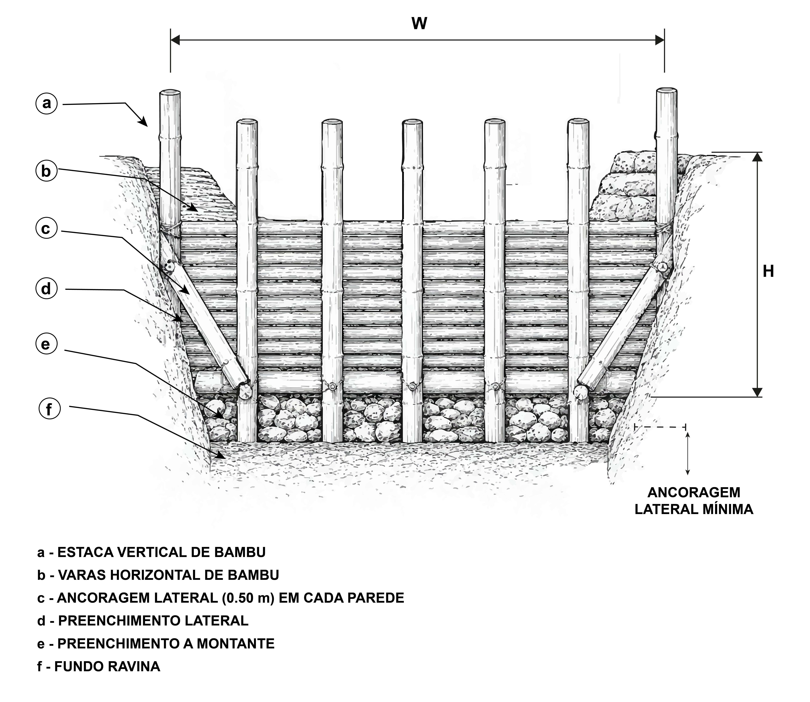
A sequência operacional em campo (Figura 5) organiza cinco etapas que transferem as cargas hidrodinâmicas da estrutura para o solo de fundação, materializando, no caso da feição-tipo F1 (seção em U, D = 1,10 m), a variante de vala retangular descrita acima. A etapa inicial de escavação basal sob o eixo transversal da ravina (Fig. 5a) abre a vala de 0,30–0,40 m que define o plano de apoio inferior da estrutura, preserva o solo de fundação úmido, evita exposição prolongada entre escavação e cravamento e reduz fluxo preferencial sob a barreira. O posicionamento das estacas verticais (Fig. 5b) ocorre em seguida, com cravamento de 30 cm abaixo do fundo da vala e profundidade enterrada total de 60–80 cm em paliçadas inertes ou 70–100 cm em paliçadas vivas, suficiente para mobilizar resistência passiva do solo contra o empuxo do sedimento retido e, na variante viva, posicionar os nós basais com gemas viáveis abaixo da zona de dessecamento sazonal.
A abertura de entalhes de pelo menos 0,50 m para ancoragem lateral em cada parede (Fig. 5c) prende os extremos da trama em material não perturbado além da zona de alívio das margens, reduzindo a tendência ao escoamento de contorno. O entrelaçamento alternado das varas horizontais entre as estacas (Fig. 5d) forma a face permeável da barreira, distribui o empuxo entre estacas sucessivas e mantém porosidade controlada para drenagem hidráulica. O acabamento com sacos de ráfia preenchidos com solo local sobre a face montante (Fig. 5e) sela a interface basal, completa a vedação iniciada pela compactação do solo escavado e favorece a deposição inicial do patamar sedimentar. Essa ordem executiva reduz a chance de deslocamento da estrutura durante os primeiros eventos de escoamento concentrado, quando o sedimento ainda não consolidou o patamar a montante e a barreira está sujeita à carga hidrodinâmica máxima (Morgan e Rickson, 2003; Piton e Recking, 2016).
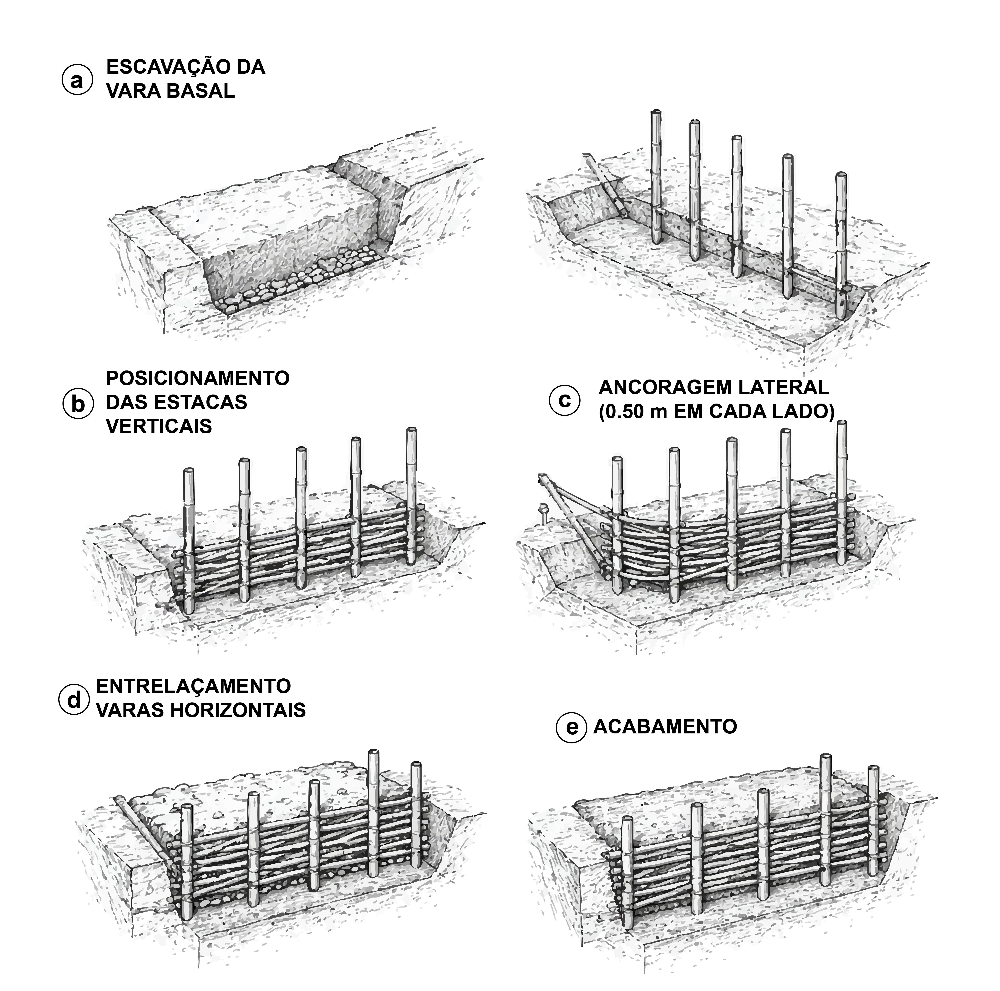
Cravadas a cada 30–50 cm, as estacas verticais tiveram espaçamento ditado pela largura da ravina e pelo diâmetro das varas disponíveis. A penetração mínima de 30 cm abaixo do fundo da vala ancora a estrutura contra o empuxo do sedimento retido e contra a componente horizontal da força de arraste durante eventos extremos (Morgan e Rickson, 2003; Tardio et al., 2017). Sobre essas estacas, as varas horizontais foram entrelaçadas alternadamente entre a face montante e jusante, gerando uma trama que funciona como barreira permeável, com vazios entre varas que permitem a passagem da água e reduzem a carga hidrostática, ao passo que a rugosidade da trama dissipa energia cinética e induz deposição de partículas transportadas (Galia et al., 2022; Piton e Recking, 2016; Wang et al., 2021). O detalhe construtivo do entrelaçamento (Figura 6) mostra como a alternância das varas gera travamento mecânico sem eliminar a permeabilidade da barreira, pois cada vara, ao passar alternadamente por trás e pela frente das estacas sucessivas, cria pontos de contato que transferem o empuxo do sedimento para as estacas verticais e destas para o solo de fundação, enquanto os vãos entre varas adjacentes mantêm porosidade suficiente para a drenagem controlada (Acharya, 2018; Tardio et al., 2017).
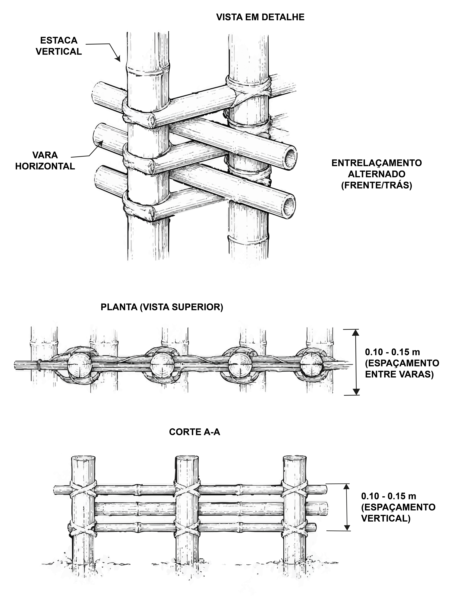
A ancoragem lateral de 0,50 m em cada parede foi adotada como parâmetro mínimo de controle construtivo, e a Figura 7 ilustra os dois estágios do mecanismo de falha quando esse embutimento é negligenciado. No estágio inicial (Fig. 7a), o escoamento concentrado encontra caminho preferencial pelas margens da ravina, zona de menor resistência ao fluxo por ausência de compactação e de trama, e contorna a barreira antes que a deposição central consolide o patamar (Piton e Recking, 2016; Zema et al., 2014). Esse fluxo lateral concentra tensão cisalhante junto ao contato vara–parede e evolui para o estágio terminal (Fig. 7b), no qual a falha por contorno ocorre com escavação progressiva da margem, perda da continuidade transversal da barreira e redução rápida da vida útil da intervenção (Chen et al., 2025). O embutimento de 0,50 m ancora a extremidade das varas em material não perturbado além da zona de alívio da parede, forçando o fluxo a percorrer a seção completa da barreira.
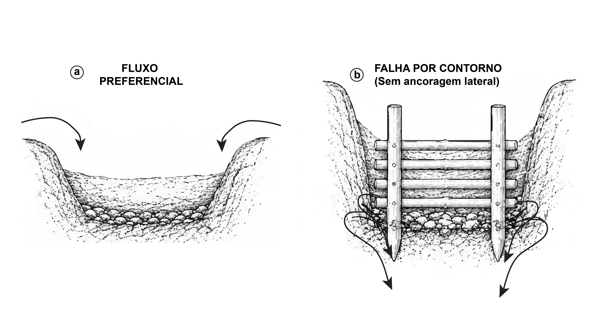
Concluído o entrelaçamento, a compactação de solo contra a face montante vedou a base e reduziu fluxo preferencial sob a estrutura, procedimento compatível com a função hidráulica de check-dams permeáveis e com a necessidade de estabilizar o depósito inicial (Piton e Recking, 2016; Wang et al., 2021). Sobre essa base vedada, a semeadura de gramíneas a montante, preferencialmente Brachiaria decumbens ou Paspalum notatum, acelera a cobertura dos sedimentos depositados e aumenta a rugosidade superficial do patamar em formação, contribuindo para a transição da função estabilizadora da estrutura física para a cobertura vegetal (Bombino et al., 2019; Gyssels et al., 2005; Vannoppen et al., 2015; Zema et al., 2018). A escolha dessas espécies se justifica pelas suas características biotécnicas, como densidade de raízes na camada de 0–20 cm e resistência à tração radicular, que ampliam a coesão do solo superficial e reduzem a erodibilidade do patamar sob escoamento concentrado (Holanda et al., 2022).
Significado hidrossedimentológico da sequência
A retenção de sedimentos tende a transformar uma sucessão de estruturas isoladas em degraus deposicionais conectados. O perfil longitudinal com paliçadas sucessivas (Figura 8) representa o estágio intermediário do processo, com deposição a montante e corte transversal de uma paliçada parcialmente preenchida cuja cunha sedimentar ainda não atingiu a crista da barreira. Nessa condição, a rugosidade hidráulica aumenta e o gradiente longitudinal efetivo diminui à medida que o patamar se consolida (Lucas-Borja et al., 2021; Morgan e Rickson, 2003). Essa transformação do perfil é o mecanismo central da bioengenharia aplicada ao controle de erosão linear, pois a redução do gradiente diminui a velocidade do escoamento para uma mesma lâmina, reduz a capacidade de transporte de sedimento e favorece deposição adicional, com efeito acumulado sobre a conectividade hidrossedimentológica da bacia (Antonio et al., 2021; Galia et al., 2022).
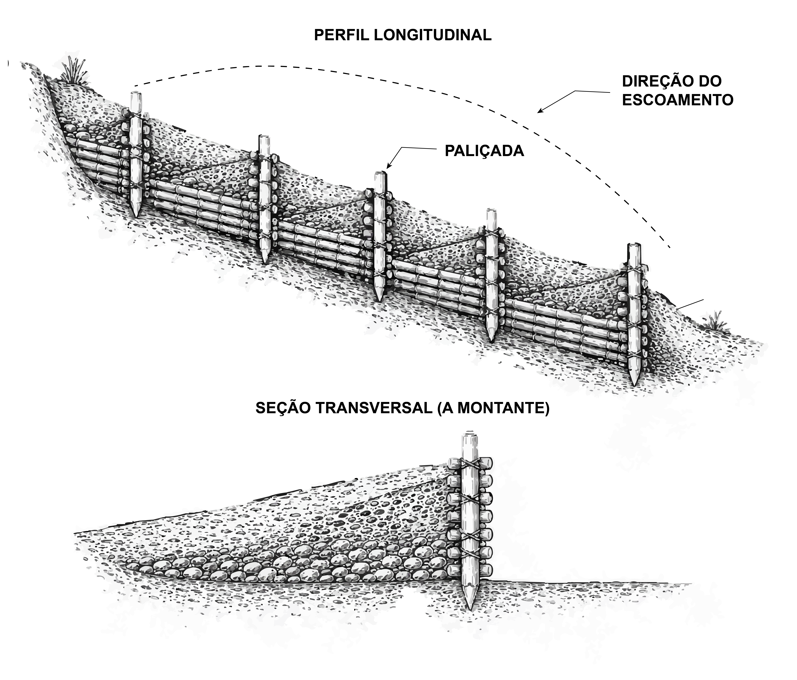
[GAP: Atualizar A instalação em campo (Figura 9) registra a barreira transversal de bambu entrelaçado na posição em que o patamar de deposição se desenvolve a montante, como evidência da execução descrita no protocolo. A análise quantitativa do desempenho deposicional, da resposta a séries pluviométricas e das projeções de saturação por segmento foi conduzida em estudo paralelo dedicado ao monitoramento das mesmas paliçadas-piloto (Cassol et al., 2023).]
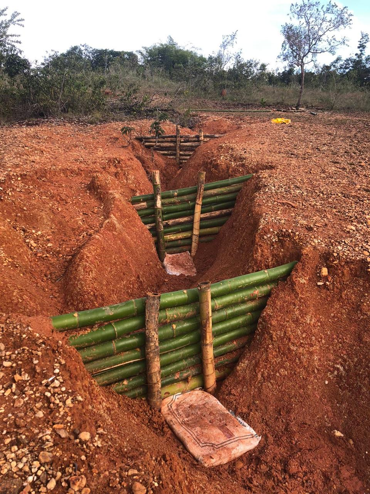
A aplicação da interpolação geoestatística à malha de pinos instalada a montante da paliçada-piloto produziu uma superfície contínua de espessura do depósito de sedimentos retido pela estrutura (Figura 10). O corte longitudinal mostra uma cunha bem definida, com espessura máxima da ordem de 0,50 m junto à face montante da paliçada e redução gradual até valores próximos de 0,05 m a 6 m de distância. Esse gradiente indica que a maior parte do sedimento ficou retida no setor imediatamente a montante da barreira, onde a perda de velocidade do escoamento tende a ser maior e a capacidade de transporte diminui mais rapidamente (Lucas-Borja et al., 2021; Piton e Recking, 2016).
Em planta, as isolinhas da Figura 10 mostram distribuição aproximadamente simétrica em relação ao eixo da ravina na área amostrada de 4 m × 6 m. A ausência de um núcleo secundário de maior espessura junto às margens sugere que, na campanha representada, a deposição se concentrou no eixo principal de retenção e não indicou desvio lateral dominante do fluxo. A faixa com espessura superior a 0,25 m, equivalente à metade da espessura máxima observada, concentra-se nos primeiros 2 m a montante da estrutura e marca a porção mais ativa do depósito. Em termos de desempenho, esse padrão é compatível com uma paliçada permeável funcionando como barreira de retenção parcial, sem bloquear totalmente o escoamento, mas reduzindo energia suficiente para formar um patamar sedimentar inicial.
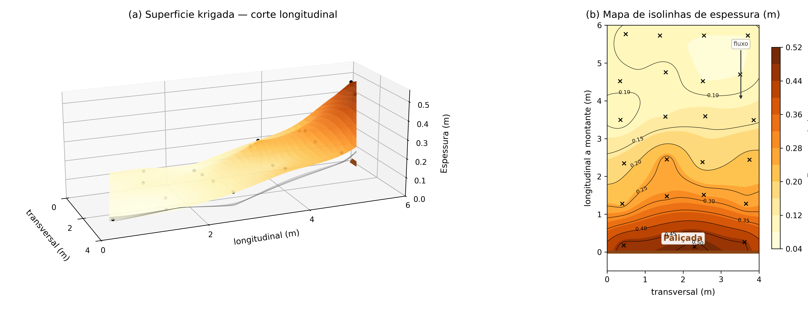
Durabilidade do bambu e prolongamento da vida útil
A retenção documentada na Figura 10 permanece efetiva enquanto a barreira preserva capacidade portante, condição que o ataque de coleobrocas e cupins subterrâneos compromete progressivamente nas zonas internodais e nos diafragmas, onde a difusão de oxigênio e umidade é facilitada e o parênquima rico em amido funciona como substrato preferencial para Coptotermes e gêneros correlatos (Figura 11) (Brito et al., 2020; Kadir e Abd. Hamid, 2024; Liese, 1998). O tratamento para durabilidade com sais de boro descrito na seção de métodos (§Tratamento para durabilidade e programação de manutenção) pode promover a vida útil mecânica desses elementos em condições tropicais (Bamboo and Sustainable Construction, 2023; Kaminski et al., 2016).
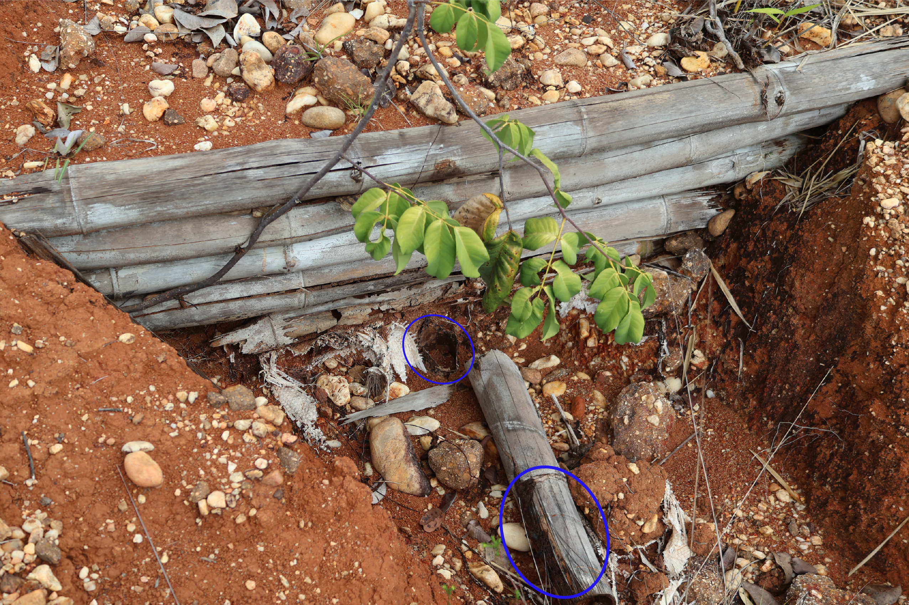
A trajetória de fator de segurança estimada por simulação tridimensional de elementos finitos para os mesmos arranjos construtivos, derivada em estudo paralelo e adotada aqui como critério de programação de manutenção (§Tratamento para durabilidade e programação de manutenção), corrobora o intervalo operacional adotado (Figura 12). O segmento mais demandado mantém fator de segurança superior a 2,7 em dez anos sob taxa de biodegradação pessimista, ao passo que a aceleração quadrática da perda de capacidade a partir do quinto ano delimita a janela em que a substituição modular das estacas verticais, identificadas como elementos críticos pela concentração de momento fletor nas junções com os colmos horizontais, deve anteceder a reativação do transporte de sedimentos (Romano et al., 2016; Tang et al., 2022).
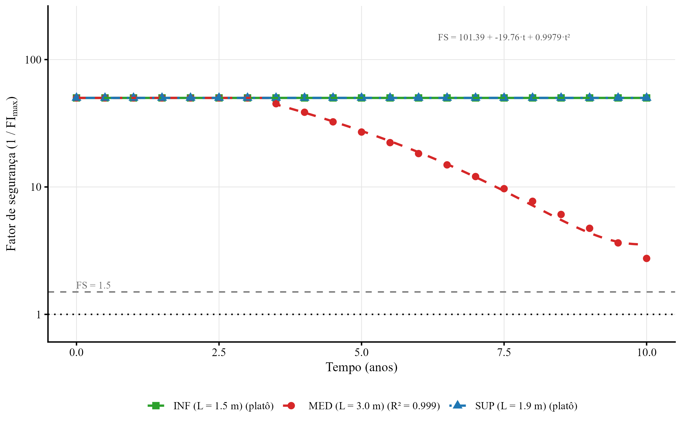
Custo comparativo e viabilidade de adoção
O custo de implantação influencia a adoção de paliçadas em propriedades rurais com restrição de maquinário e acesso difícil. A comparação por metro quadrado de barreira transversal indica que o bambu reduz a dependência de cimento, areia, brita e transporte pesado, enquanto preserva função hidráulica compatível com ravinas pequenas e médias (Tabela 4).
Tabela 4. Comparativo de custos por metro quadrado de barreira transversal
| Item | Paliçada de bambu | Check-dam de alvenaria |
|---|---|---|
| Material (R$/m²) | 15–30 | 150–300 |
| Mão de obra (R$/m²) | 20–40 | 80–150 |
| Custo total (R$/m²) | 35–70 | 230–450 |
| Vida útil | 3–5 anos | 20+ anos |
| Manutenção | Anual | Quinquenal |
O custo unitário da paliçada de bambu é 5 a 7× inferior ao da alternativa em alvenaria. Mesmo considerando três ciclos de reposição em 15 anos, o custo acumulado tende a permanecer menor, com a vantagem de mobilizar mão de obra local não especializada e reduzir custos logísticos em áreas com acesso limitado (Fontes et al., 2021). Além da economia direta, a paliçada de bambu dispensa formas, cura e equipamentos de mistura, o que facilita sua adoção em propriedades onde o transporte de concreto é inviável, e o material degradado incorpora matéria orgânica ao solo, contribuindo para a recuperação da fertilidade do patamar formado.
Conclusões
A montagem de paliçadas permeáveis pode deixar de depender apenas da experiência do executor quando o diagnóstico hidrogeotécnico da ravina define onde e como a estrutura atua. O critério analítico aplicado à feição-tipo em Plintossolo ajustou a intervenção ao controle integrado da retenção de sedimentos e da estabilidade do talude por redução da tensão cisalhante, desde que o contato estrutura–ravina seja tratado como ponto crítico do projeto, com vala basal, compactação a montante e ancoragem lateral. O preparo dos colmos e a brotação induzida permitem passar de uma estrutura inerte para uma paliçada viva, na qual a função mecânica inicial pode ser complementada pelo reforço radicular e pela cobertura vegetal sobre o sedimento retido. Quando comparada a alternativas em alvenaria, a paliçada de bambu sustenta-se como opção custo-efetiva em propriedades com acesso logístico restrito, ao dispensar concreto, formas e mão de obra especializada e ao incorporar matéria orgânica ao patamar formado durante sua degradação. A transferência do protocolo para outros solos e regimes de chuva deve ser feita por nova parametrização hidrogeotécnica, não pela simples reprodução do arranjo construtivo, e depende de representar a degradação mecânica do bambu sob incerteza pluviométrica e de conectá-la a ferramentas de apoio à decisão em escala de bacia.